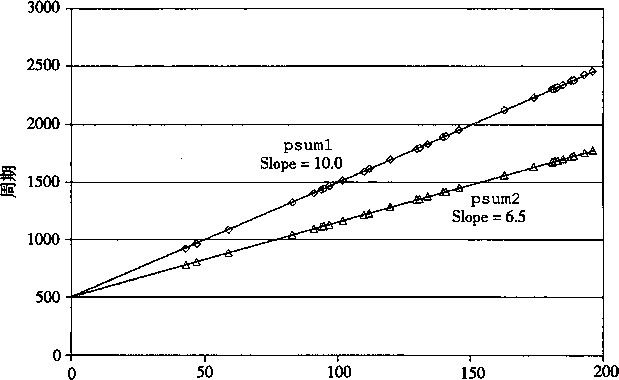
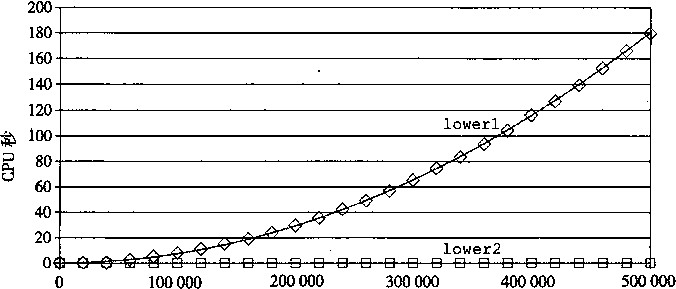

|第5章|
| Computer Systems ： A Programmer’s Perspective, 2E
优化程序性能
你能获得的对程序最大的加速比就是 当你第一次让它工作起来的时候。
John K.Ousterhout
写程序最主要的目标就是使它在所有可能的情况下都正确工作。一个运行得很快但是给出错 误结果的程序没有任何用处。程序员必须写出清晰简洁的代码，这样做不仅是为了程序员能够看 懂代码，也是为了在检査代码和今后需要修改代码时，其他人能够读懂和理解代码。
另一方面，在很多情况下，让程序运行得快也是一个重要的考虑因素。如果一个程序要实时 地处理视频帧或者网络包，一个运行得很慢的程序就不能提供所需的功能。当一个计算任务的 计算量非常大，需要执行数日或者数周，那么哪怕只是让它运行得快20%也会产生重大的影响。 本章会探讨如何使用几种不同类型的程序优化技术，使程序运行得更快。
编写高效程序需要几类活动：第一，我们必须选择一组合适的算法和数据结构。第二，我们 必须编写出编译器能够有效优化以转换成高效可执行代码的源代码。对于第二点，理解优化编译 器的能力和局限性是很重要的。编写程序方式中看上去只是一点小小的变动，都会引起编译器优 化方式很大的变化。有些编程语言比其他语言容易优化得多。C语言的有些特性，例如执行指针 运算和强制类型转换的能力，使得编译器很难对它进行优化。程序员经常能够以一种使编译器更 容易产生高效代码的方式来编写他们的程序。第三项技术针对处理运算量特别大的计算，将一个 任务分成多个部分，这些部分可以在多核和多处理器的某种组合上并行地计算。我们会把这种性 能改进的方法推迟到第12章去讲。即使是要利用并行性，每个并行的线程都以最高性能执行也 是非常重要的 ， 所以无论如何本章所讲的内容也还是相关的。
在程序开发和优化的过程中 ， 我们必须考虑代码使用的方式，以及影响它的关键因素。通 常，程序员必须在实现和维护程序的简单性与它的运行速度之间做出权衡。在算法级上，几分钟 就能编写一个简单的插入排序，而一个高效的排序算法程序可能需要一天或更长的时间来实现和 优化。在代码级上，许多低级别的优化往往会降低程序的可读性和模块性，使得程序容易出错， 并且更难以修改或扩展。对于在性能重要的环境中反复执行的代码 ， 进行广泛的优化比较合适。 一个挑战就是尽管做了广泛的变化 ， 但还是要维护代码一定程度的简洁和可读性。
我们描述许多提高代码性能的技术。理想的情况是 ， 编译器能够接受我们编写的任何代码， 并产生尽可能高效的、具有指定行为的机器级程序。现代编译器釆用了复杂的分析和优化形式， 而且变得越来越好。然而，即使是最好的编译器也受到妨 碍优化的因素 （optimization blocker) 的阻碍，妨碍优化的因素就是程序行为中那些严重依赖于执行环境的方面。程序员必须编写容易 优化的代码，以帮助编译器。
程序优化的第一步就是消除不必要的内容，让代码尽可能有效地执行它期望的工作。这包括 消除不必要的函数调用、条件测试和存储器引用。这些优化不依赖于目标机器的任何具体属性。
为了使程序性能最大化，程序员和编译器都需要一个目标机器的模型，指明如何处理指令， 以及各个操作的时序特性。例如，编译器必须知道时序信息，才能够确定是用一条乘法指令，还 是用移位和加法的某种组合。现代计算机用复杂的技术来处理机器级程序，并行地执行许多指 令，执行顺序还可能不同于它们在程序中出现的顺序。程序员必须理解这些处理器是如何工作 的，从而调整他们的程序以获得最大的速度。基于Intel和AMD处理器最近的设计，我们提出
了一个这种机器的高级模型。我们还设计了一种图形数据流（data-flow)表示法，可以使处理器 对指令的执行形象化，我们还可以利用它预测程序的性能。
了解了处理器的运作，我们就可以进行程序优化的第二步，利用处理器提供 的指令级并行 (instruction-level parallelism)能力，同时执行多条指令。我们会讲述几个对程序的变化，降低一 个计算不同部分之间的数据相关，增加并行度，这样就可以同时执行这些部分了。
我们以对优化大型程序的问题的讨论来结束这一章。我们描述了代码剖 析程序 （profiler)的 使用，代码剖析程序是测量程序各个部分性能的工具。这种分析能够帮助找到代码中低效率的 地方，并且确定程序中应该着重优化的部分。最后，是一个重要的观察结论称为Amdahl 定律 (Amdahl’s law),它量化了对系统某个部分进行优化所带来的整体效果。
在本章的描述中，我们使代码优化看起来像按照某种特殊顺序，对代码进行一系列转换的简 单线性过程。实际上，这项工作远非这么简单。需要相当多的试错法试验。当我们进行到后面的 优化阶段时，尤其是这样，到那时，看上去很小的变化会导致性能上很大的变化。相反，一些看 上去很有希望的技术被证明是无效的。正如后面的例子中会看到的那样，要确切解释为什么某段 代码序列有某个延迟，是很困难的。性能可能依赖于处理器设计的许多详细特性，而对此我们所 知甚少。这也是我们尝试各种技术的变形和组合的另一个原因。
研究程序的汇编代码表示，是理解编译器，以及产生的代码如何运行的最有效的手段之一。 仔细研究内循环的代码是一个很好的开端，确认降低性能的属性，例如过多的存储器引用和对寄 存器使用不当。从汇编代码开始，还可以预测什么操作会并行执行，以及它们会如何使用处理器 资源。正如我们会看到的，常常通过确认关键路径(critical path)来决定执行一个循环所需要的 时间（或者说，至少是一个时间下界)。所谓关键路径是在循环的反复执行过程中形成的数据相 关链。然后，我们会回过头来修改源代码，试着控制编译器使之产生更有效率的实现。
大多数编译器，包括GCC，一直都在更新和改进，特别是在优化能力方面。一个很有用的 策略是只重写程序到编译器由此就能产生有效代码所需要的程度就好了。这样，能尽量避免损害 代码的可读性、模块性和可移植性，就好像我们使用的是具有最低能力的编译器。同样地，通过 测量值和检查生成的汇编代码，反复修改源代码和分析它的性能是很有帮助的。
对于新手程序员来说，不断修改源代码，试图欺骗编译器产生有效的代码，看起来很奇怪, 但这确实是编写很多高性能程序的方式。比较于另一种方法——用汇编语言写代码，这种间接的 方法具有的优点是：虽然性能不一定是最好的，但得到的代码仍然能够在其他机器上运行。
5.1 优化编译器的能力和局限性
现代编译器运用复杂精细的算法来确定一个程序中计算的是什么值，以及它们是被如何使用 的。然后它们会利用一些机会来简化表达式，在几个不同的地方使用同一个计算，以及降低一个 给定的计算必须被执行的次数。大多数编译器，包括GCC,向用户提供了一些对它们所使用的 优化的控制。就像在第3章中讨论过的，最简单的控制就是制 订优化级别。 例如，以命令行标志 ‘-01’调用GCC是让GCC使用一组基本的优化。在网络旁注ASM:OPT中讨论过的，以标志 ‘-02’或‘-03’调用GCC会让它使用更全面的优化。这样做可以进一步提高程序的性能，但 是也可能增加程序的规模，也可能使标准的调试工具更难对程序进行调试。我们的表述，虽然对 于大多数GCC用户来说，优化级别2已经成为了被接受的标准，•但是还是主要考虑以优化级别 1编译出的代码。我们特意限制了优化级别，以展示写C语言函数的不同方法如何影响编译器产 生代码的效率。我们会发现可以写出的C代码，即使用优化等级1编译得到的性能，也比用可 能的更高优化等级编译一个更初级的版本得到的性能好。
编译器必须很小心地对程序只使用 安全的 优化，也就是说对于程序可能遇到的所有可能的情
况，在C语言标准提供的保证之下，优化后得到的程序和未优化的版本有一样的行为。限制编 译器只进行安全的优化，消除了一些造成不希望的运行时行为的可能原因，但是这也意味着程序 员必须花费更大的力气写出程序使编译器能够将之转换成有效机器代码。为了理解决定一种程序 转换是否安全的难度，让我们来看看下面这两个过程：
void twiddleKint *xp, int *yp)
-C
*xp += *yp;
*xp += *yp;
void twiddle2(int *xp, int *yp) s {
9 *xp += 2* *yp;
.!() >
乍一看，这两个过程似乎有相同的行为。它们都是将存储在由指针yp指示的位置处的值两 次加到指针x P 指示的位置处的值。另一方面，函数twiddle2效率更高一些。它只要求3次存 储器引用（读*xp,读*yp,写*xp),而twiddlel需要6次（2次读*xp, 2次读*yp, 2次 写*即)。因此，如果要编译器编译过程twiddlel,我们会认为基于twiddle2执行的计算能 产生更有效的代码。
不过，考虑xp等于yp的情况。此时，函数twiddlel会执行下面的计算：
*xp += *xp ; /氺 Double value at xp */
*xp += *xp; /*■ Double value at xp 木 /
结果是xp的值会增加4倍。另一方面，函数twiddle2会执行下面的计算：
*xp += 2* *xp; /氺 Triple value at xp */
结果是 X p的值会增加3倍。编译器不知道twiddlel会如何被调用，因此它必须假设参数x P 和yp可能会相等。因此，它不能产生twiddle2风格的代码作为twiddlel的优化版本。
这种两个指针可能指向同一个存储器位置的情况称为存 储器别名使用 （memory aliasing)。 在只执行安全的优化中，编译器必须假设不同的指针可能会指向存储器中同一个位置。再看一个 例子，对于一个使用指针变量P和q的程序，考虑下面的代码序列：
x = 1000; y = 3000;
*q = y; /* 3000 氺 /
*p = x; /* 1000 */
tl = *q; /* 1000 or 3000 */
tl的计算值依赖于指针p和q是否指向存储器中同一个位置——如果不是，tl就等于 3000,但如果是，tl就等于1000。这造成了一个主要的妨 碍优化的因素，， 这也是可能严重限制 编译器产生优化代码机会的程序的一个方面。如果编译器不能确定两个指针是否指向同一个位 置，就必须假设什么情况都有可能，限制了可能的优化策略。
® 练习题 5.1下面的问题说明了存储器别名使用，可能会导致意想不到的程序行为的方式。考虑下面 这个交换两个值的过程：
/> Swap value x at xp with value y at yp */
void swap(int *xp, int *yp)
|
*xp = |
=*xp H |
卜 *yp; h. >： H |
i- y * |
|
*yp = |
=*xp - |
-*yp; h -xh |
f-y-y ~ y; * |
|
*xp = |
=*xp - |
-*yp; /'卞 xh |
- y 氺 |
如果调用这个过程时xp等于yp,会有什么样的效果？
第二个妨碍优化的因素是函数调用。作为一个示例 ， 考虑下面这两个过程 ：
int f();
2
:i int funclO {
return f() + f() + f() + f();
>
6
int func2() {
return 4*f();
>
最初看+去两个过程计算的都是相同的结果 ， 但是fimc2只调用f 1次，而funcl调用f4 次。以fund作为源时，会很想产生fimc2风格的代码。
不过，考虑下面f的代码：
1 int counter = 0;
int f() {
return counter++;
>
这个函数有个 副作用 ——它修改了全局程序状态的一部分。改变调用它的次数会改变 程序的行为。特别地 ， 假设开始时全局变量counter都设置为0,对funcl的调用会返回 0+1+2+3=6,而对func2的调用会返回4 • 0=0。
大多数编译器不会试图判断一个函数是否没有副作用，因此任意函数都可能是优化的候选 者，例如fum C 2中的做法。相反，编译器会假设最糟的情况，并保持所有的函数调用不变。
用内联函数替换优化函数调用
如网络旁注 ASMDPT 描述的 ， 包含兩数调用的代码可以用一个称为内联兩数替换 （inline substitution, 或者简称 “ 内联 ” (inlining)) 的过程进行优化，此时，将函数调用替换为函数体。 例如，我们可以通过替换掉对函数 f 的 4 次调用 ， 展开 funcl 的代码 ：
/* Result of inlining f in funcl */
int funclinO {
int t = counter++; /* +0 */
t += counter++; /* +1 */
t += counter++; /* +2 */
t += counter++; /* +3 */
return t;
}
这样的转换既减少了函数调用的开销，也允许对展开的代码做进一步优化。例如，编译器可 以统一 funclin 中对全局变量 counter 的更新 ， 产生这个函数的一个优化版本 ：
/* Optiffiization of inlined code 木 /
int funcloptO {
int t = 4 * counter + 6;
counter = t + 4;
return t;
}
对于这个特定的函数f的定义，上述代码忠实地重现了 funcl的行为。
GCC的最近版本会尝试进行这种形式的优化，要么是被用命令行选项“-finline”指示时， 要么是使用优化等级2或者更高的等级时。由于在我们的描述中只考虑优化等级1,所以我们假 设编译器不会执行内联函数替换。
在各种编译器中，就优化能力来说，GCC被认为是胜任的，但是并不是特别突出。它完成 基本的优化，但是它不会对程序进行更加“有进取心的”编译器所做的那种激进变换。因此， 使用GCC的程序员必须花费更多的精力，以一种简化编译器生成高效代码的任务的方式来编 写程序。
5.2 表示程序性能
我们引入度量标准每元素的周期数（Cycles Per Element, CPE),作为一种表示程序性能并 指导我们改进代码的方法。CPE这种度量标准帮助我们在更详细的级别上理解迭代程序的循环 性能。这样的度量标准对执行重复计算的程序来说是很适当的，例如处理图像中的像素，或是计 算矩阵乘积中的元素。
处理器活动的顺序是由时钟控制的，时钟提供了某个频率的规律信号，通常用千兆赫 兹（GHz),即十亿周期每秒来表示。例如，当表明一个系统有“4 GHz”处理器，这表示处理 器时钟运行频率为4X10 9 千兆赫玆。每个时钟周期的时间是时钟频率的倒数。通常是用纳秒 (nanosecond, 1纳秒等于10_ 9 秒）或皮秒（picosecond, 1皮秒等于10_ 12 秒）来表示的。例如， 一个4 GHz的时钟其周期为0.25纳秒，或者说250皮秒。从程序员的角度来看 ， 用时钟周期来 表示度量标准要比用纳秒或皮秒来表示有帮助得多。用时钟周期来表示，度量值表示的是执行了 多少条指令，而不是时钟运行得有多快。
许多过程含有在一组元素上迭代的循环。例如，图5-1中的函数psuml和 P sum2计算 的都是一个长度为《的向量的 前置和 （prefix sum)。对于向量2 =〈冲，“]，…，前置和 P = (Po， Pi，• • •，定义为
Po=ci 0
PrPi-& a n I < i < n (5-1)
函数psuml每次迭代计算结果向量的一个元素。第二个函数使用循环展开（loop unrolling) 的技术 ， 每次迭代计算两个元素。本章的后面我们会探讨循环展开的好处。关于分析和优化前置 和计算的内容请参见练习题5.11、5.12和家庭作业5.21。
这样一个过程所需要的时间可以用一个常数加上一个与被处理元素个数成正比的因子来描 述。例如，图5-2是这两个函数需要的周期数关于《的取值范围图。使用最小二乘方拟合（least squares fit),我们发现，psuml和psum2的运行时间（用时钟周期为单位）分别近似于等式 496+10.0«和500+6.5^这两个等式表明对代码计时和初始化过程、准备循环以及完成过程的开 销为496〜500个周期加上每个元素6.5或10.0周期的线性因子。对于较大的”值（比如说大于 200),运行时间就会主要由线性因子来决定。这些项中的系数称为每元素的周期数（CPE)的有 效数。注意，我们更愿意用每个元素的周期数而不是每次循环的周期数来度量，这是因为像循环 展开这样的技术使得我们能够用较少的循环完成计算，而我们最终关心的是，对于给定的向量长 度，程序运行的速度如何。我们将精力集中在减小计算的CPE上。根据这种度量标准，psum2 的 CPE 为 6.5,优于 CPE 为 10.0 的 psuml 0
1 |
/* Compute prefix sum of vector a */ |
|
2 T. |
void psuml (float a[], float p[], J- |
long int n) |
4 |
\ long int i; |
|
5 |
p[0] = a [0]; |
|
6 |
for (i = 1; i < n; i++) |
|
7 8 |
p[i] = p[i-l] + a[i]; > |
|
9 10 |
void psum2(float a[], float p[] , |
long int n) |
11 |
{ |
|
12 |
long int i; |
|
13 |
p[0] = a[0]; |
|
14 |
for (i = 1; i < n-1; i+:2) -C |
|
15 |
float mid_val = p[i-l] + |
a[i]; |
16 |
p[i] = mid.val; |
|
17 |
p[i+l] = mid_val + a[i+l]; |
|
18 |
> |
|
19 |
/ 木 For odd n, finish remaining element */ |
|
20 |
if (i < n) |
|
21 |
p[i] = p[i -1] + a[i]; |
|
22 |
> |
|
图5-1前置和函数。这是关于我们如何表示程序性能的示例

元素
图5-2前置和函数的性能。两条线的斜率表明每元素的周期数（CPE)
什么是最小二乘方拟合
对于一个数据点 ( Xl , ^), ..., (x n , 的集合，我们常常试图画一条线，它能最接近于这些 数据代表的 X-Y 趋势。使用最小二乘方拟合，寻找一条形如 ;;= w;c + 6 的线，使得下面这个误 差度量最小：
E(m, b) = ^ (mxi -\-b — yi) 2
i=l,n
将五 (w, zo 分别对 m 和 6 求导，把两个导数函数设置为 0, 进行推导就能得出计算 W 和 6 的算法。
_练习题5.2在本章后面，我们会从一个函数开始，生成许多不同的变种，这些变种保持函数的行为, 又具有不同的性能特性。对于其中三个变种，我们发现运行时间 （以时 钟周期为单位 ）可以用 下面的 函数近似地估计：
版本 1: 60 + 35«
版本 2: 136+ 4«
版本 3: 157 + 1.25«
每个版本在《取什么值时是三个版本中最快的？记住，《总是整数。
5.3 程序示例
为了说明一个抽象的程序是如何被系统地转换成更有效的代码的，考虑图5-3所示的简单向 量数据结构。向量由两个存储器块表示：头部和数据数组。头部是一个声明如下的结构：
code/opt/vec.h
/* Create abstract data type for vector */
typedef struct {
long int len;
data_t *data;
} vec_rec, *vec_ptr;
code/opt/vec.h
|
len |
len |
0 1 |
2 |
len —1 |
|||
|
data |
纖猶 |
uU 二 |
|||||
图5-3向量的抽象数据类型。向量由头信息加上指定长度的数组来表示
这个声明用数据类型data_t作为基本元素的数据类型。在我们的评价中，度量代码对于 整数（C语言的int)、单精度&点数（C语言的float)和双精度浮点数（C语言的double) 数据的性能。为此，我们会分别为不同的类型声明编译和运行程序，就像下面这个例子对数据类 型int —样：
typedef int data一t;
我们还会分配一个len个data一t类型对象的数组，来存放实际的向量元素。
图5-4给出的是一些生成向量、^问向量元素以及确定向量长度的基本过程。一个值得注意 的重要特性是get一vec_element,向量访问程序，它会对每个向量引用进行边界检查。这段 代码类似于许多其^语言（包括Java)所使用的数组表示法。边界检查降低了程序出错的概率, 但是它也会减缓程序的执行。
作为一个优化示例，考虑图5-5中所示的代码，它根据某种运算，将一个向量中所有的元素 合并成一个值。通过使用编译时常数IDENT和0P的不同定义，这段代码可以重编译成对数据 执行不同的运算。特别地，使用声明：
#define IDENT 0 #define OP +
它对向量的元素求和。使用声明：
#define IDENT 1 #define OP *
code/opt/vec.c
/* Create vector of specified length */
vec^ptr new_vec(long int len)
4
5
6
7
9 0 1 2 3 A
5
6
7
9
20
21
22
23
24
25
26
27
28
29
30
y\
32
33
34
35
36
37
38
39
/* Allocate header structure */
vec_ptr result = (vec^ptr) malloc(sizeof(vec_rec)); if (!result)
return NULL; /* Couldn't allocate storage */ result->len = len;
/* Allocate array */ if (len > 0) {
data_t *data = (data_t *)calloc(len, sizeof(data_t)); if (!data) {
free((void *) result);
return NULL ;卜 Couldn't, allocate storage 氺/
>
result->data = data;
}
else
result-〉data = NULL; return result;
Retrieve vector element and store at dest.
Return 0 (out of bounds) or 1 (successful)
*/
int get_vec_element(vec_ptr v, long int index, data_t *dest)
if (index < 0 I I index >= v->len) return 0;
♦dest = v->data[index]; return 1;
/* Return length of vector */ long int vec_length(vec_ptr v)
return v->len;
■ code/opt/vec.c
图5-4向量抽象数据类型的实现。在实际程序中，数据类型data一t被声明为int、float或double
/氺 Implementation with maximum use of data abstraction */
void combinel(vec_ptr v, data_t *dest)
{ 、
A long int i;
5
*dest = IDENT ;
for (i = 0; i < vec_length(v); i++) {
s data_t val;
9 get_vec_element(v, i, &val);
*dest = *dest OP val;。
n }
.12 }
图5-5合并运算的初始实现。使用标识元素工DENT和合并运算OP的不同声明，我们可以测量 该函数对不同运算的性能
它计算的是向量元素的乘积。
在我们的讲述中，会对这段代码进行一系列的变化，写出这个合并函数的不同版本。为了衡 量进步，我们会在一个拥有Intel Core i7处理器的机器上测量这些函数的CPE性能，这个机器称 为参考机。3.1节中给出了一些有关这个处理器的特性。这些测量值刻画的是程序在某个特定的 机器上的性能，所以在其他机器和编译器组合上不保证有同等的性能。不过，我们把这些结果与 许多不同编译器/处理器组合上的结果做了比较，发现也非常相似。
我们会进行一组变换，发现有很多只能带来很小的性能提高，而其他的能带来更巨大的效 果。确定该使用哪些变换的组合确实是编写快速代码的“魔术”（black art)。有些不能提供可测 量的好处的组合确实是无效的，然而有些组合是很重要的，它们使编译器能够进一步优化。根据 我们的经验，最好的方法是实验加上分析：反复地尝试不同的方法，进行测量，并检查汇编代码 表示以确定底层的性能瓶颈。
作为一个起点，下面是combinel的CPE度量值，它运行在我们的参考机上，尝试了数据 类型和合并运算的所有组合。对于单精度和双精度浮点数据，在参考机上的实验表明对于加法， 它们的性能相同，但是对于乘法，性能不同。因此，报告五个CPE值：整数加法和乘法、浮点 加法、单精度乘法（标号为“F*”）和双精度乘法（标号为“D*”)。
函数 |
页码 |
方法 |
整数 |
浮点数 |
+ * |
+ F* D* |
|||
combinel |
331 |
抽象的未优化的 |
20.02 29.21 |
27.40 27.90 27.36 |
combinel |
331 |
抽象的-01 |
12.00 12.00 |
12.00 12.01 13.00 |
可以看到测量值有些不太精确。对于整数求和，以及乘积的CPE数更像是29.00,而 不是29.02或29.21。我们不会“捏造”数据让它们看起来好看一点儿，只是给出了实际获 得的测量值。有很多因素会使得可靠地测量某段代码序列需要的精确周期数这个任务变得 复杂。检査这些数字时，在头脑里把结果向上或者向下取整几百分之一个时钟周期会很有 帮助。
未经优化的代码是从C语言代码到机器代码的直接翻译，通常有明显的低效率。简单 地使用命令行选项‘-01’，就会进行一些基本的优化。正如可以看到的，程序员不需要 做什么，就会显著地提高程序性能——超过两个数量级。通常，养成至少使用这个级别 优化的习惯是很好的。剩下的测试，使用级别1和更高级别的优化来生成和测量我们的 程序。
5.4 消除循环的低效率
可以观察到，过程combinel调用函数vec_length作为for循环的测试条件，如图5-5 所示。回想关于如何将含有循环的代码翻译成机^级程序的讨论（见3.6.5节),每次循环迭代时 都必须对测试条件求值。另一方面，向量的长度并不会随着循环的进行而改变。因此，只需计算 一次向量的长度，然后在我们的测试条件中都使用这个值。
图5-6是一个修改了的版本，称为combine2,它在开始时调用vec一length,并将结果 赋值给局部变量length。对于某些数据类型和操作，这个变换明显地影响了程序性能，对于其 他的情况，只有很小甚至没有影响。无论是哪种情况，都需要这种变换来消除这个低效率，这有 可能成为尝试进一步优化时的瓶颈。
/* Move call to vec„length out of- loop */
void combine2(vec_ptr v, data_t *dest)
long int i;
long int length = vec_length(v);
6
*dest = IDENT;
for (1 = 0; i < length; i++) {
data_t val;
get_vec_element(v, i, &val);
*dest = *dest OP val;
>
图5-6改进循环测试的效率。通过把对vec一length的调用移出循环测试，我们不再需要每次 迭代时都执行这个函数
函数 |
页码 |
方法 |
整数 |
浮点数 |
|||
+ |
* |
+ |
F* |
D* |
|||
combinel |
331 |
抽象的-01 |
12.00 |
12.00 |
12.00 |
12.01 |
13.00 |
combine2 |
333 |
移动 vec_length |
8.03 |
8.09 |
10.09 |
11.09 |
12.08 |
这个优化是一类常见的优化的一个例子，称为代码移动（codemotion)。这类优化包括识别 要执行多次（例如在循环里）但是计算结果不会改变的计算。因而可以将计算移动到代码前面不 会被多次求值的部分。在本例中，我们将对vec_length的调用从循环内部移动到循环的前面。
优化编译器会试着进行代码移动。不幸的是，就像前面讨论过的那样，对于会改变在哪里调 用函数或调用多少次的变换，编译器通常会非常小心。它们不能可靠地发现一个函数是否会有副 作用，因而假设函数会有副作用。例如，如果vec一length有某种副作用，那么combinel和 CO mbine2可能就会有不同的行为。为了改进代码，程序员必须经常帮助编译器显式地完成代 码的移动。
举一个combinel中看到的循环低效率的极端例子，考虑图5-7中所示的过程lowerl。这 个过程模仿几个学生的函数设计，他们的函数是作为一个网络编程项目的一部分交上来的。这个 过程的目的是将一个字符串中所有大写字母转换成小写字母。这个大小写转换是将‘A’到‘Z’ 范围内的字符转换成‘a’到‘z’范围内的字符。
对库函数strlen的调用是lowerl循环测试的一部分。虽然strlen通常是用特殊的 x86字符串处理指令来实现的，但是它的整体执行也类似于图5-7中给出的这个简单版本。因为 C语言中的字符串是以mill结尾的字符序列，strlen必须一步一步地检査这个序列，直到遇 到null字符。对于一个长度为《的字符串，strlen所用的时间与《成正比。因为对lowerl 的 n 次迭代的每一次都会调用strlen,所以lowerl的整体运行时间是字符串长度的二次项, 正比于《 2 。
如图5-8所示（使用strlen的库版本)，这个函数对各种长度的字符串的实际测量值证实 了上述分析。lowerl的运行时间曲线图随着字符串长度的增加上升得很陡峭（图5-8a)。图5-8b 展示了 7个不同长度字符串的运行时间（与曲线图中所示的有所不同），每个长度都是2的幂数。 可以观察到，对于lowerl来说，字符串长度每增加一倍，运行时间都会变为原来的4倍。这 很明显地表明运行时间是二次的。对于一个长度为1 048 576的字符串来说 ， lowerl需要超过 13分钟的CPU时间。
/* Convert string to lowercase: slow */
void lowerl(chax *s)
{
int i;
5
for (i = 0; i < strlen(s); i++)
if (s5i] >= 'A' && s[i] <=丨Z 1 )
s[i] -= ('A' - 'a');
>
10
/* Convert string to lowercase: faster */
void lower2(ch2Lr *s)
-C
M int i;
15 int len = strlen(s);
■16
for (i =. 0; i < len; i++)
if (s[i] >: 'A' && s[i] <= 'Z')
s[i] -= ('A' - 'a');
>
21
/*. Sample implementation of library function strlen */
/* Compute length of string */
size_t strlen(const char *s)
{
int length = 0;
while (*s != '\0') {
S ++；
length++;
>
return length;
>
图5-7小写字母转换函数。两个过程的性能差别很大
除了把对strlen的调用移出了循环以外，图5-7中所示的lower2与lowerl是一样的。 这样一来，性能有了显著改善。对于一个长度为1 048 576的字符串，这个函数只需要1.5毫 秒——比lowerl快了 500 000多倍。字符串长度每增加一倍，运行时间也会增加一倍——很显 然运行时间是线性的。对于更长的字符串，运行时间的改进会更大。
在理想的世界里，编译器会认出循环测试中对strlen的每次调用都会返回相同的结果, 因此应该能够把这个调用移出循环。这需要非常成熟完善的分析，因为strlen会检查字符串 的元素，而随着lowerl的进行，这些值会改变。编译器需要探査，即使字符串中的字符发生 了改变，但是没有字符会从非零变为零，或是反过来，从零变为非零。即使是使用内联函数，这 样的分析也远远超出了最成熟完善的编译器的能力，所以程序员必须自己进行这样的变换。
这个示例说明了编程时一个常见的问题，一个看上去无足轻重的代码片断有隐藏的渐近低效 率（asymptotic inefficiency)。人们可不希望一个小写字母转换函数成为程序性能的限制因素。通 常，会在小数据集上测试和分析程序，对此，lowerl的性能是足够的。不过，当程序最终部署 好以后，过程完全可能被应用到一个有100万个字符的串上。突然，这段无危险的代码变成了一 个主要的性能瓶颈。相比较而言，lowed的性能对于任意长度的字符串来说都是足够的。大型 编程项目中出现这样问题的故事比比皆是。一个有经验的程序员工作的一部分就是避免引人这样

字符串长度
字符串长度 |
||||||
函数 |
16 384 |
32 768 |
65 536 |
131 072 262 144 |
524 288 |
1 048 576 |
lowerl lower2 |
0.19 0.0000 |
0.77 0.0000 |
3.08 0.0001 |
12.34 49.39 0.0002 0.0004 |
198.42 0.0008 |
791.22 0.0015 |
的渐近低效率。
b)
图5-8小写字母转换函数的性能比较。由于循环结构的效率比较低，初始代码lowerl的运行时间是2 次项的。修改过的代码lower2的运行时间是线性的
®练习题5.3考虑下面的函数：
int min(int x, int y) { return x < y ? x int max(int x, int y) { return x < y ? y void incr(int *xp, int v) { *xp += v; > int square(int x) { return x*x; }
下面三个代码片断调用这些函数
A.
max(x, y); incr(&i, 1)) i >= min(x, y); incr(&i, -1))
for (i = min(x, y); i < t += square(i);
for (i = max(x, y) - 1;
t += square(i);
int low = min(x, y); int high = max(x, y);
for (i = low; i < high; incr(&i, 1)) t += square(i);
假设x等于10,而y等于100。填写下表，指出在代码片断A〜C中4个函数每个被调用的 次数：
代码 |
min |
max |
incr |
square |
A. |
||||
B. |
||||
C. |
5.5 减少过程调用
像我们看到的那样，过程调用会带来相当大的开销，而且妨碍大多数形式的程序优化。从 combine2的代码（见图5-6)中可以看出，每次循环迭代都会调用get_vec一element来获 取下一个向量元素。对每个向量引用，这个函数要把向量索引i与循环^界做比较，很明显会 造成低效率。在处理任意的数组访问时，边界检查可能 是个很 有用的特性，但是对 CO mbin e 2 代码的简单分析表明所有的引用都是合法的。
作为替代，假设为我们的抽象数据类型增加一个函数get一vec_start。这个函数返回数 组的起始地址，如图5-9所示。然后就能写出此图中 CO mbine3所示的过程，其中的循环里没 有函数调用。它没有用函数调用来获取每个向量元素，而是直接访问数组。一个纯粹主义者可能 会说这种变换严重损害了程序的模块性。原则上来说，向量抽象数据类型的使用者甚至不应该需 要知道向量的内容是作为数组来存储的，而不是作为诸如链表之类的某种其他数据结构来存储 的。比较实际的程序员会争论说这种变换是获得高性能结果的必要步骤。
code/opt/vec.c
data_t *get_vec_stcirt (vec_ptr v)
-C
return v->data;
}
code/opt/vec.c
. /* Direct access to vector data */
void combine3(vec_ptr v, data_t *dest)
4
5
6
7
9
10
11
12
long int i;
long int length = vec_length(v); data_t *data = get_vec_start(v);
♦dest = IDENT;
for (i = 0; i < length; i++) {
*dest = *dest OP data[i];
>
图5-9消除循环中的函数调用。得到的代码运行速度快得多，这是以损害一些程序的模块性为代价的
函数 |
页码 |
方法 |
整数 |
浮点数 |
|||
+ |
本 |
+ |
F* |
D* |
|||
combine2 |
333 |
移动 vec_length |
8.03 |
8.09 |
10.09 |
11.09 |
12.08 |
combine3 |
336 |
直接数据访问 |
6.01 |
8.01 |
10.01 |
11.01 |
12.02 |
得到的性能提高出乎意料的普通，只提高了整数求和的性能。不过同样地，这样的低效率会 成为试图进一步优化的瓶颈。我们还会再回到这个函数（见5.11.2节)，看看为什么 CO mbine2 中反复的边界检查不会让性能更差。对于性能至关重要的应用来说，为了速度，经常必须要损害 一些模块性和抽象性。为了防止以后要修改代码，添加一些文档是很明智的，说明釆用了哪些变 换以及导致进行这些变换的假设。
5.6 消除不必要的存储器引用
combines的代码将合并运算计算的值累积在指针dest指定的位置。通过检查编译出来
的循环产生的汇编代码，可以看出这个属性。在此给出数据类型为float,合并运算为乘法的 X86-64 代码：
1
2
3
4
5
7
3d:SSSQ*a*
Jle^roovlvdp bii2n fl /49momumoadcmJg
.2 L
data„t = float, OP =本 ,data in %rax, dest in %rbp
(%rbp) , 0 /oxmmO '
(%rax,%rdx,4), %xmmO °/ 0 xmmO, (%rbp)